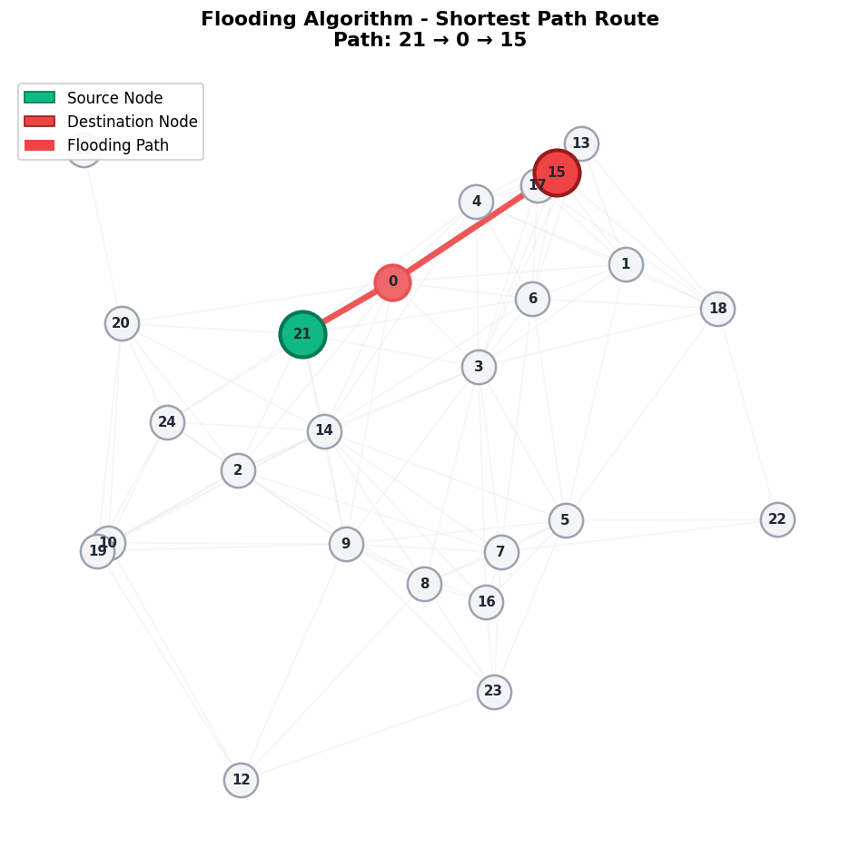
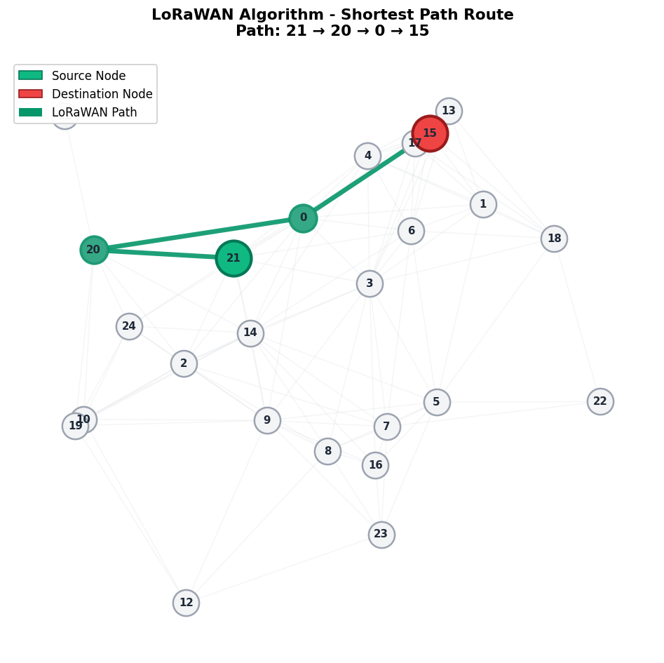

🌐 Network Routing Topology - Algorithm Comparison
Source: Node {{ source }} | Destination: Node {{ destination }}
🔴 Flooding (Existing) Broadcast

Simple broadcast-based flooding across network
{% if paths and paths.Flooding %}
📍 Route (representative):
{% for node in paths.Flooding %}
{{ node }}
{% if not loop.last %}→{% endif %}
{% endfor %}
🟢 LoRaWAN (Proposed) Energy-Aware

Energy-aware LoRaWAN routing (proposed)
{% if paths and paths.LoRaWAN %}
📍 Route Path:
{% for node in paths.LoRaWAN %}
{{ node }}
{% if not loop.last %}→{% endif %}
{% endfor %}
📊 Combined Algorithm Comparison
Red edges highlight Flooding path and Green shows LoRaWAN route.